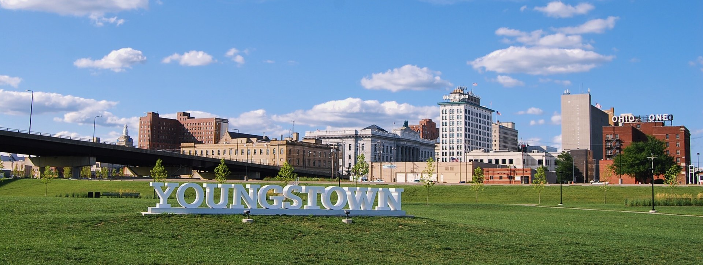

Youngstown is a city in the U.S. state of Ohio, and the largest city and county seat of Mahoning County. According to the 2020 United States Census, Youngstown had a city population of 60,068.[3] It is a principal city of the Youngstown–Warren metropolitan area, which had a population of 541,243 in 2020, making it the 107th-largest metropolitan area in the United States and seventh-largest metro area in Ohio.[6] Youngstown is on the Mahoning River, 58 miles (93 km) southeast of Cleveland and 61 miles (100 km) northwest of Pittsburgh. In addition to having its own media market, Youngstown is also part of the larger Northeast Ohio region. Youngstown is midway between Chicago and New York City via Interstate 80. The city was named for John Young, an early settler from Whitestown, New York, who established the community's first sawmill and gristmill. Youngstown is called a midwestern city, but is less than 400 miles (640 km) from the Atlantic Ocean. It was an early industrial city of the late 19th and early 20th centuries; with restructuring of heavy industry and movement of jobs offshore, it has been classified as part of the Rust Belt. Traditionally known as a center of steel production, Youngstown has been forced to adapt after the steel industry in the United States fell into decline in the 1970s, leaving communities throughout the region without any major industry. There has been a decline in population of more than 60% since 1959. Youngstown falls within the Appalachian Ohio region, among the foothills of the Appalachian Mountains. Downtown Youngstown has seen tremendous change since 2010. It has become a center of culture, entertainment, and innovation. It is now home to bars, restaurants, and the recently completed Youngstown Foundation Amphitheater. Youngstown's first new downtown hotel since 1974—the DoubleTree by Hilton—opened in 2018 in the historic Stambaugh Building, adapted for this use. First floor commercial space includes a restaurant.[7] Several businesses, such as Turning Technologies, an education technology company, are headquartered in Downtown Youngstown.
